צוות מקצועי
מטפלות מסורות עם לב גדול
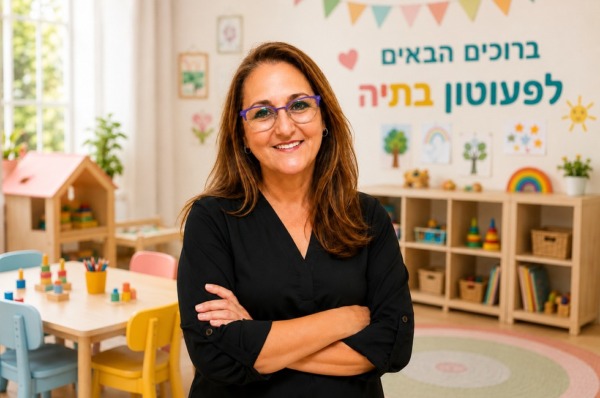
אנו מעניקים לילדים סביבה חמה, בטוחה, משפחתית ומלאה בתוכן. מסגרת איכותית, יציבה ומקצועית להתפתחות שמחה, חברתית, עצמאית ובטוחה.
מטפלות מסורות עם לב גדול
פיקוח קפדני וביטחון מלא
אוכל טרי ומזין המוכן במקום
יצירה, מוזיקה, חוגים ופעילות חוץ
כבוד, שיתוף וסבלנות
זמני מנוחה שקטה בחדרים נעימים
פעוטון בתיה הוא גן פרטי ותיק בעפולה, הפועל מתוך אהבה גדולה לילדים, ניסיון חינוכי של מעל 30 שנה, וראייה עמוקה של צורכי הגיל הרך.
אצלנו כל ילד מקבל יחס אישי, חום, גבולות ברורים, סדר יום יציב, סביבה בטוחה והזדמנות לגדול בקצב שלו.
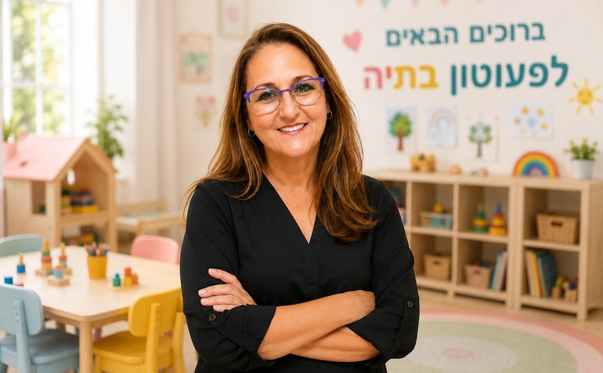
שילוב של חום, גבולות, עצמאות, ערכים ותקשורת פתוחה עם ההורים.
יחס אישי, רגיש ומכבד לכל ילד.
כבוד, שיתוף, סבלנות ועזרה הדדית.
עדכונים שוטפים ושיח פתוח.
עידוד יכולות אישיות וחברתיות.
סביבה נקייה, מסודרת ונעימה.
למידה דרך חוויה, משחק ודמיון.
הסדר משתנה לפי גיל הילדים, עונות השנה וחגים, אך תמיד נשמרת מסגרת שנותנת ביטחון.
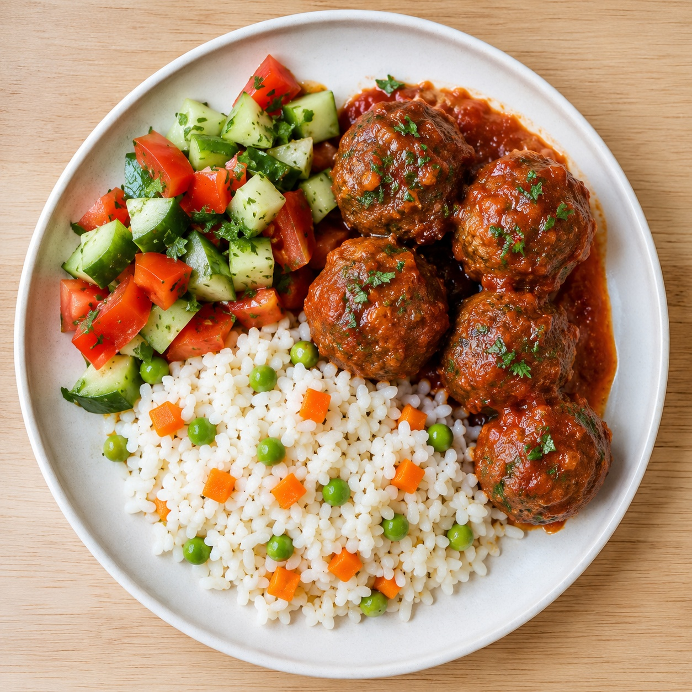
אנו מקפידים על תפריט מגוון, טרי ומותאם לילדים בגיל הרך.
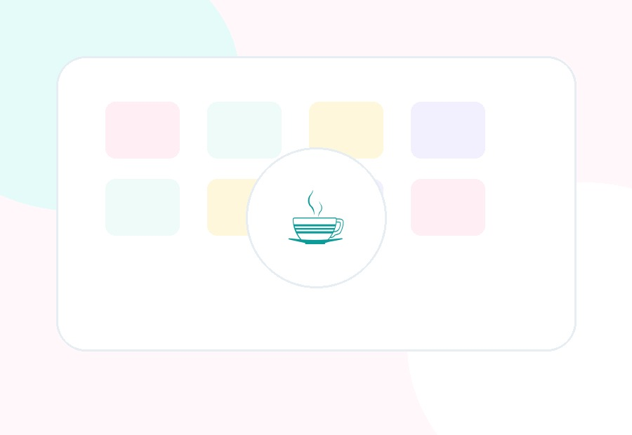
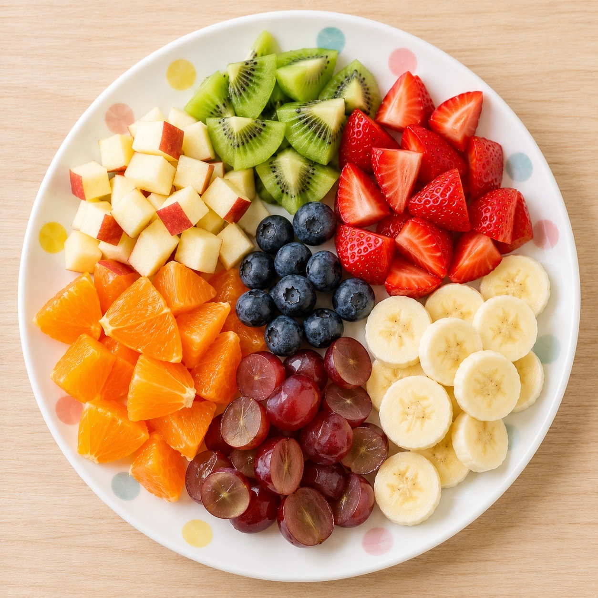
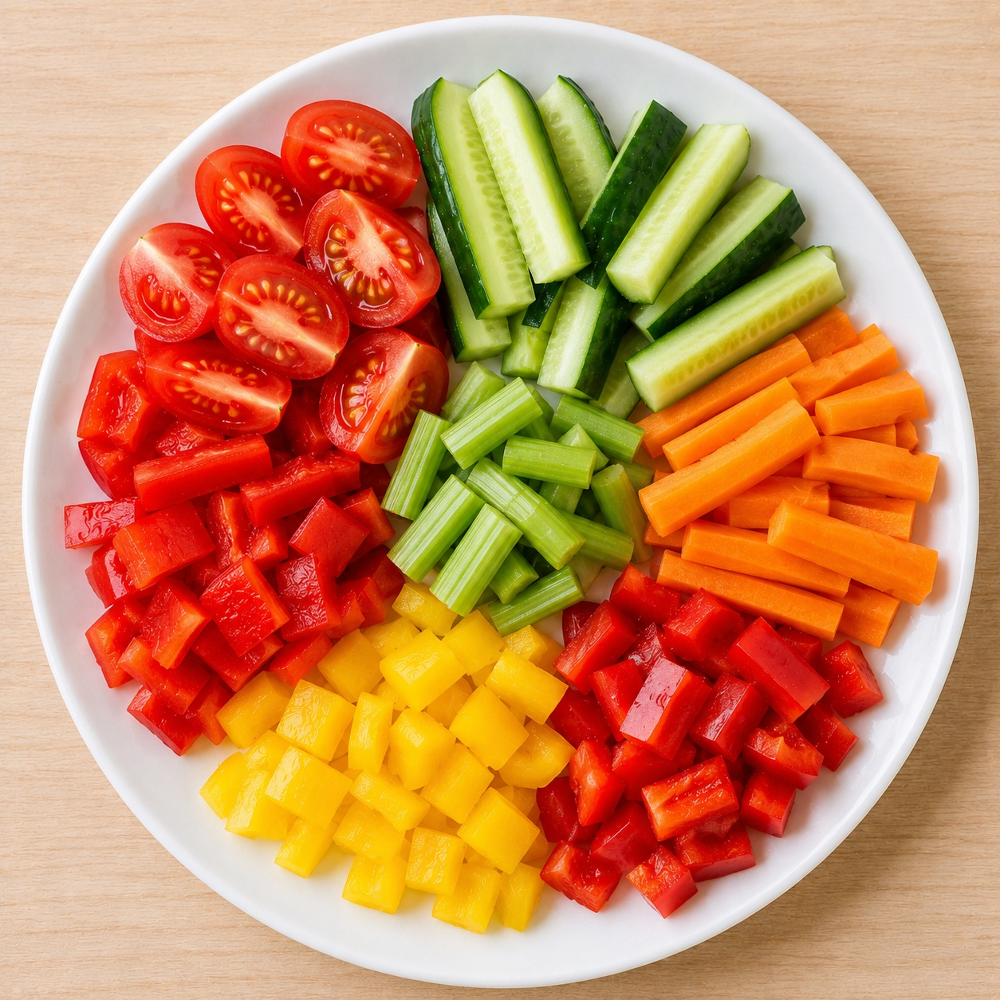
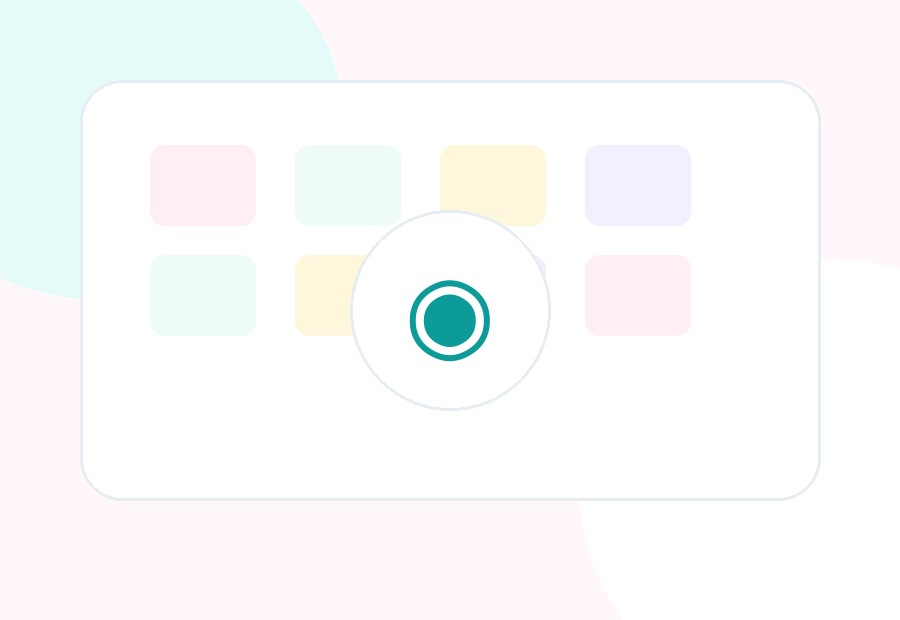
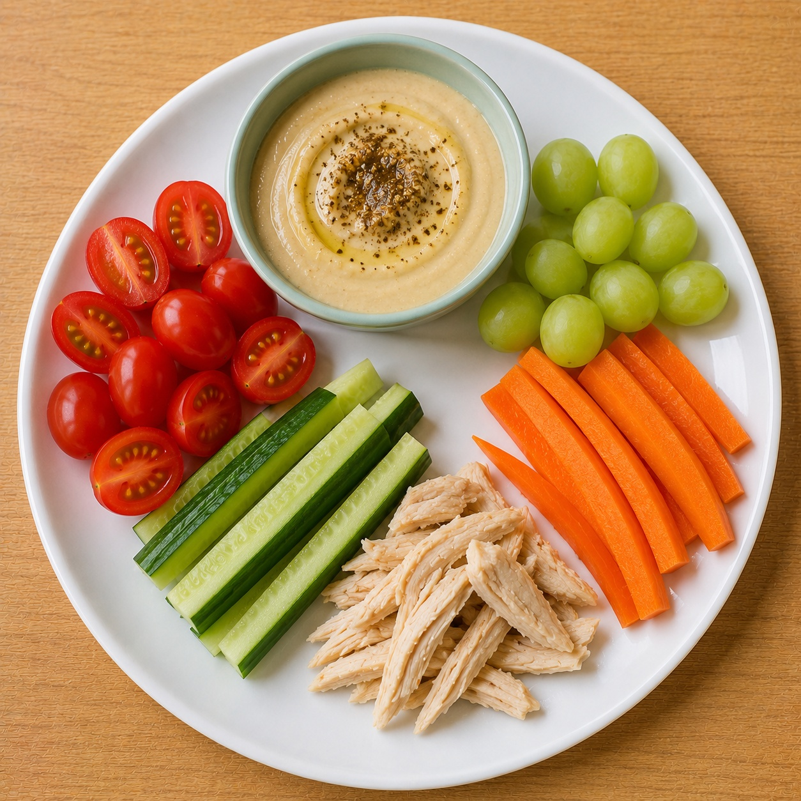
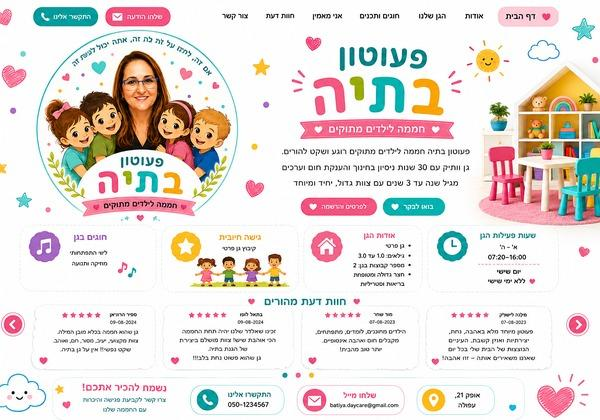
ציור, צבע, הדבקות ועבודות יד.

שירים, קצב, תנועה וריקוד.
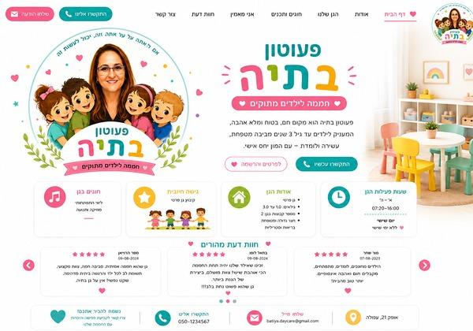
פעילויות משתנות לפי עונות השנה.

מפגש עדין ומבוקר עם בעלי חיים.
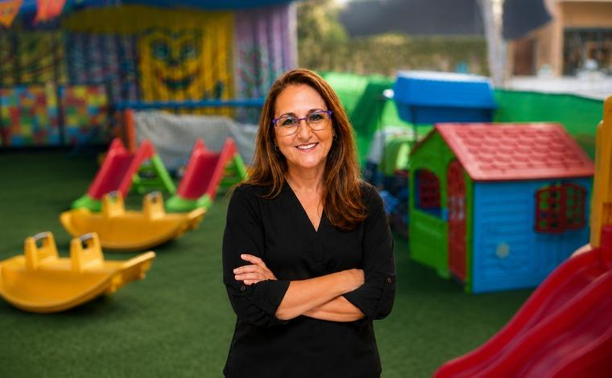
משחקי חצר, תנועה ואוויר פתוח.

שפה, דמיון והקשבה.
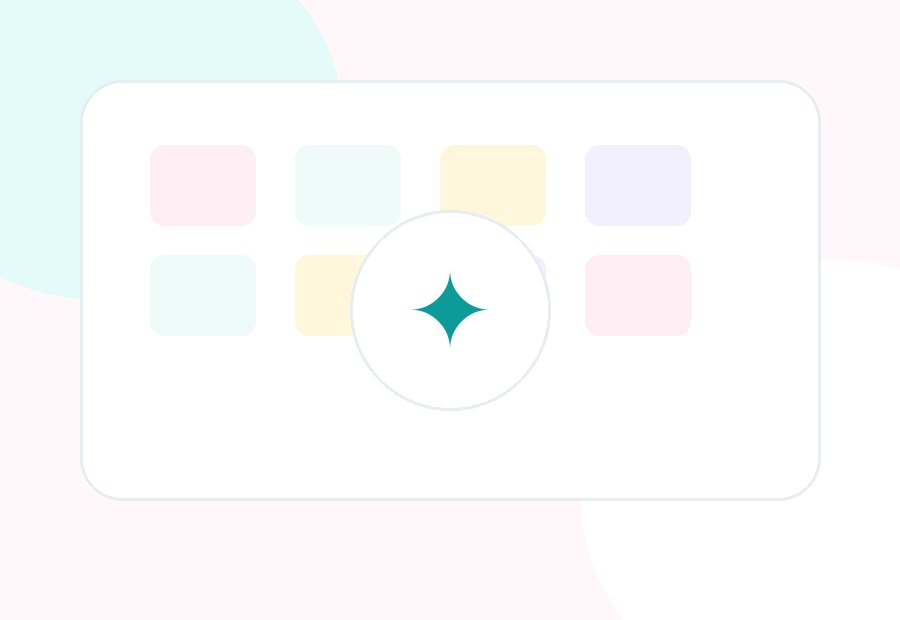
אור, שירים ושמחה.
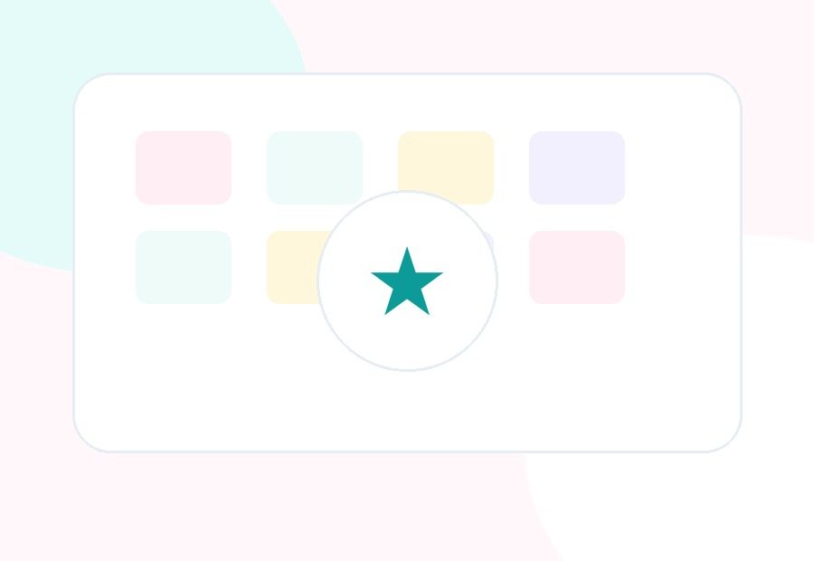
תחפושות, צבעים וחגיגה.
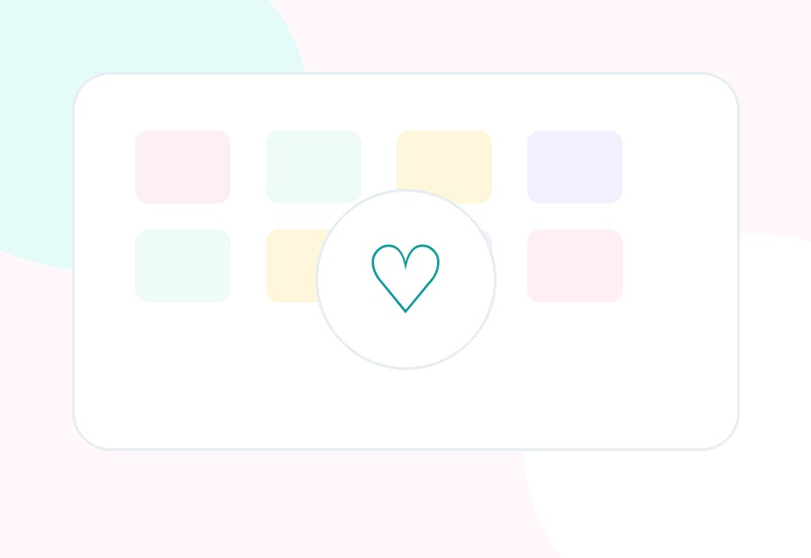
ערכים ומסורת בגובה העיניים.

חגיגה אישית ומרגשת.
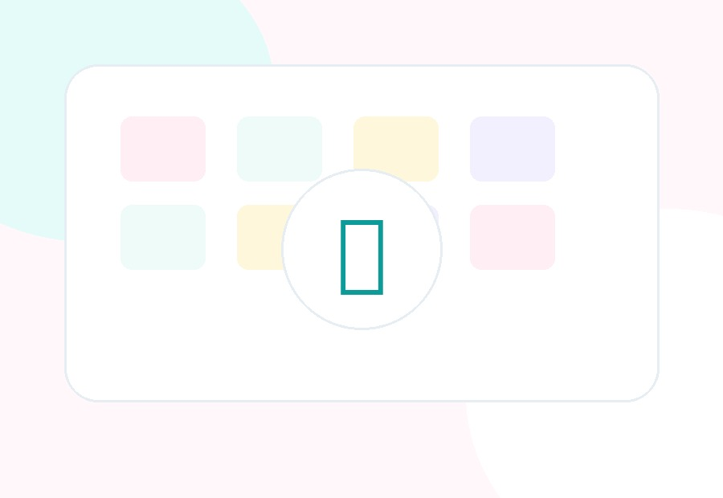
סיום שנה מרגש עם ההורים.

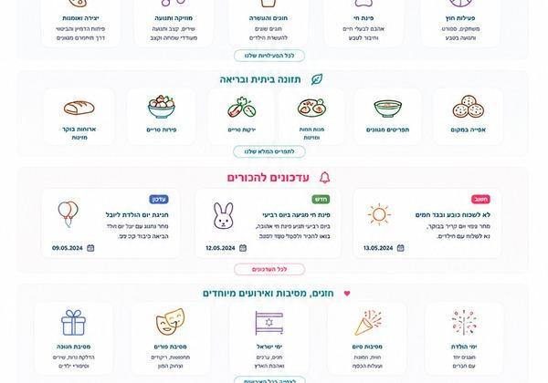

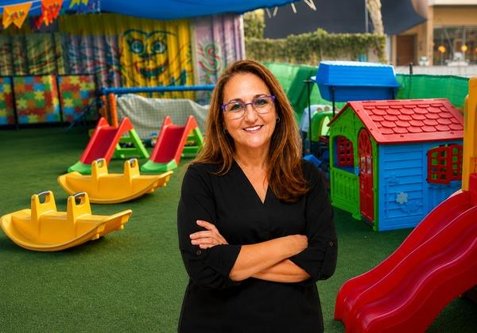
מצלמות במעגל סגור
עדכונים שוטפים להורים
בטיחות מעל הכול
הדרכות והשתלמויות לצוות
מנהלת הגן
מטפלת
מטפלת
מטפלת
מטפלת
גן שהוא חממה במלוא מובן המילה. צוות מקצועי, יציב, מסור, חם ואוהב.
ספיר הרוניאן★★★★★זכינו שהילד שלנו יהיה תחת החממה הכי אוהבת שיש. פשוט נחת בלב.
בתאל לופו★★★★★זה לא רק גן, זו משפחה אמיתית. יחס חם ואישי ואוכל טרי.
בינת כץ★★★★★הגן מיועד לילדים מגיל שנה ועד גיל שלוש.
הגן פעיל בימים א׳-ה׳ בין 07:20 ל-16:00. אין פעילות בימי שישי.
כן. יש זמן מנוחה ושינה מסודר במהלך היום.
כן. מוגשות ארוחות ביתיות, טריות ומזינות.
כן. יצירה, מוזיקה, חגים, מסיבות, ימי הולדת ופינת חי מתארחת.
נשמח לענות, להכיר ולתאם ביקור בגן.